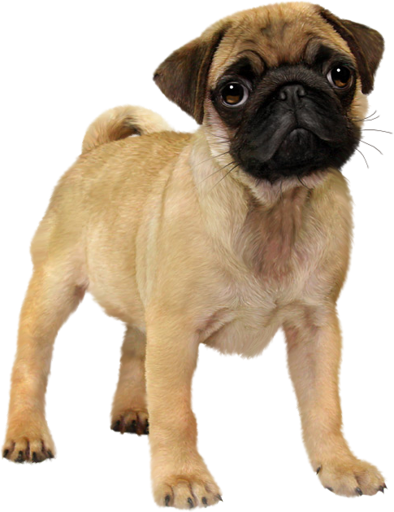

Multum in parvo (многое заключено в малом) — так можно охарактеризовать эту породу. Мопс — декоративная собака небольшого роста (взрослая особь — около 25–33 см). Это коренастая, мускулистая и достаточно тяжёлая собака квадратной формы. Её вес составляет примерно 6,3–8,1 кг. Короткая, мягкая, блестящая шерсть имеет разные окрасы: серебристый, абрикосовый, желтовато-коричневый или чёрный.

Мопсы относятся к группе собак-компаньонов: они преданы хозяину и
хорошо уживаются с детьми. У некоторых представителей породы из-за
особенностей строения головы и морды может быть ночной храп.
Владельцам очень важно контролировать здоровье питомцев и
регулярно
посещать ветеринарного врача. Чем больше лишнего веса появляется у
пса, тем толще становятся складки и тем труднее ему дышать.
Из-за этого могут появиться ограничения на прогулки в холодное или
жаркое время и в целом на физическую активность.
Мопса лучше всего покупать у ответственных заводчиков, которые
пускают в разведение только здоровых питомцев,
а также не покупать щенков с экстремально коротким строением морды.
За короткой шерстью легко ухаживать, но в складках может
скапливаться грязь, пыль и даже бактерии: важно регулярно протирать
кожу
собаки специализированными салфетками. У этих псов нет особых
требований к физическим нагрузкам,
что является большим преимуществом для занятых владельцев.